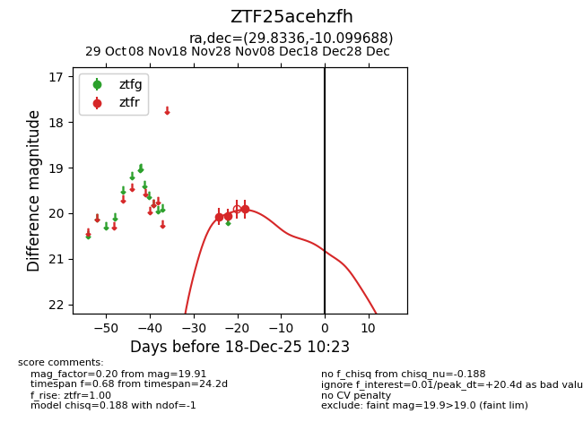
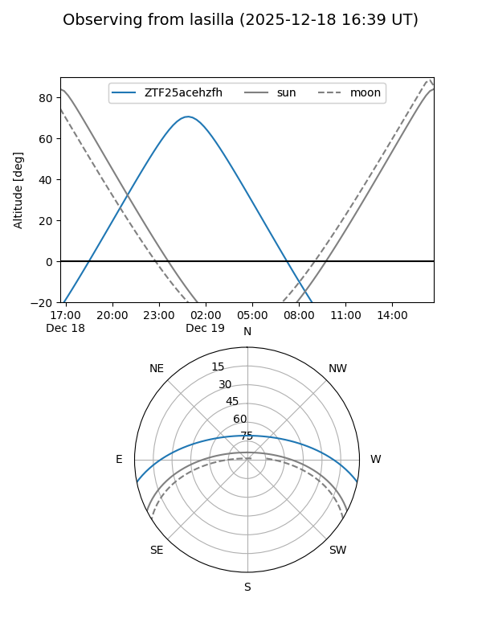
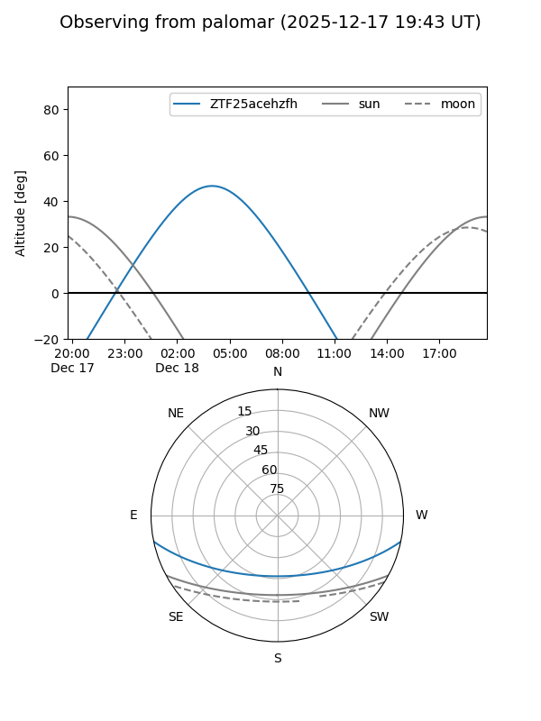

ZTF25acehzfh
Target ZTF25acehzfh at 2025-12-18 11:17
Aliases and brokers:
FINK: fink-portal.org/ZTF25acehzfh
Lasair: lasair-ztf.lsst.ac.uk/objects/ZTF25acehzfh
ALeRCE: alerce.online/object/ZTF25acehzfh
alt names
ZTF25acehzfh (ztf,fink_ztf)
Coordinates:
equatorial (ra, dec) = 29.8336,-10.09969
equatorial (HMS+DMS) = 01:59:20.06,-10:05:58.88
galactic (l, b) = (169.3748,-66.63382)
Photometry
last ztfr=19.91
3 ztfr detections
Lightcurve

Visibility


Additional plots